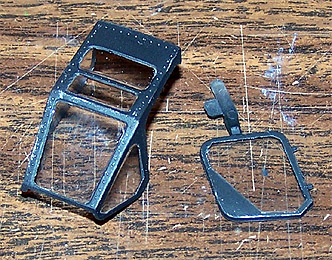
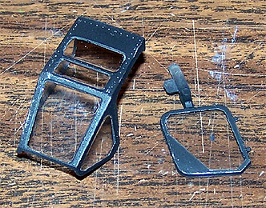
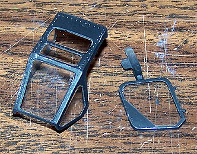

1/48 Italeri Kamov Ka-50 Hokum �Black Shark� Attack Helicopter
Kit #845 MSRP $22.00
Images and text Copyright � 2004 by Matt Swan
Developmental Background
The Ka-50 is a state-of-the-art and powerful battle helicopter which is in limited service with the Russian Air Force. There are two versions of the Hokum; the Ka-50 Hokum-A �Black Shark� (also known as the Werewolf) is a single seat close support helicopter and the Ka-52 Hokum-B �Alligator� is a two-seat trainer and combat version. Design work on this unique helicopter began in 1977 for the then Soviet army, and the first prototype, the V.80, flew for the first time on July 27 1982. The helicopter has a number of unique characteristics including a single seat to increase combat and flight characteristics and reduce operational costs. It was designed for remote operations, and not to need ground maintenance facilities for 2 weeks. The Ka-50 is fitted with the world�s first helicopter emergency rescue system (the K-37-800 ejection seat) intended to safely eject the pilot in flight and at the ground. The main rotors are jettisoned before the pilot's seat is ejected. It enables a successful ejection at both low altitude and maximum speed and the entire process takes about six seconds.
The airframe is 35% composite materials with a structural central 1m 2-keel beam of Kevlar/Nomex that protects critical systems and ammunition. The fully armored pilot's cabin can withstand 23-mm gunfire, and the cockpit glass can withstand 12.7-mm machinegun fire. The landing gear and fuselage are designed to absorb ground impact over-loads. With one engine damaged the helicopter still can fly on the remaining engine. Engine exhaust heat screens reduce the thermal signature of the helicopter and flare dispensers protect the helicopter against heat seeking missiles. The Ka-50 Helicopter is intended to engage various ground targets including armored and soft-skinned vehicles, as well as slow and low-altitude aerial targets. The helicopter is efficient in performing combat missions in close vicinity to the enemy�s fire positions owing to its high agility, survivability and powerful high-precision armament. The Ka-50 firepower is based essentially on VIKHR Supersonic Antitank Laser-beam Guided Missiles with a maximum range of 8 to 10 km and a flexibly mounted 30 mm gun.
The coaxial counter-rotating rotor system negates the need for a tail rotor and its drive system. Because of this, this aircraft is unaffected by wind strength and direction, has an unlimited hovering turn rate, and gives a smaller profile and acoustic signature, while allowing a 10-15% greater power margin. The Hokum is fully aerobatic. It can perform loops, rolls and �the funnel�, where the aircraft will maintain a concentrated point of fire while flying circles of varying altitude, elevation, and airspeed around the target. Two separately mounted engines at a maximum distance reduce the probability of their simultaneous damage. The power plant has an operational life of 30 minutes without oil, giving the pilot the opportunity to land in a safe location in the event that the oil system is damaged in combat. The helicopter also has duplicated and stand-by hydraulic and power systems and main control circuits.
Kamov is actively marketing the Black Shark and the Alligator on the world market and they may yet find their ways into service with Middle Eastern or African nations attracted to its relatively low purchase price and easy maintenance.
The Kit
Upon opening this box we are presented with two large trees of parts done in a light tan, high pressure injection molding. The parts display nicely engraved panel lines and recessed rivet detail. In several places there are larger raised service panels and a nice grid work is visible inside the engine vents. Exterior profile and details look to be fairly accurate. Inside we have a six-piece cockpit assembly that is far from accurate. It does look good and if you didn�t know better, would probably find it acceptable with the large raised detail instrument panels and crude rudder pedals. The pilot�s seat has molded seatbelts but is far from accurate in its equipment and lacks leg supports. The rotor head is adequately detailed and the 30mm cannon is nicely done and hinged for mobility.
The kit includes a full load of munitions but no alternative loads. All of the parts are well cast with minimal mold separation line and no flash. I don�t see any sink marks or injector pin marks. Also included in the box is a small sprue of clear parts that feature a two-piece canopy that can be built open or closed. The canopy pieces show nice; crisp raised frame lines and recessed rivet details. Also here we have several small lenses and marker lights. I�ve test fit the main fuselage pieces and the tail plane and they seem to fit together nicely. There is some warpage in the fuselage pieces but nothing that seems serious or could not be pulled out with standard construction techniques. I have heard reports that the model suffers from some fit problems but at this level I cannot see them.
For the plastics inventory we have 125 pieces done in the light tan polystyrene and 9 clear parts for a grand total of 134 pieces in the box and it looks like all of them will be required for the build.
You may click on the above images to view larger pictures
Decals and Instructions
The instruction sheet for the kit is a large fold-out that begins with a very brief historical background that really tells you nothing about the craft. This is followed with a parts map and a paint reference section that is solely based around Model Master paints. From here we get eleven exploded view steps that seem to do a good job of covering the construction sequence. Also included here are various color call-outs. Two panels are dedicated to decal placement and exterior paint for two aircraft. Again we are referenced to Model Master pains and are given Federal Standard numbers for this stage of the game.
The decal sheet is small but packed with lots of little warning markings and service logos. Besides these there are basic markings for two aircraft, a standard Army attack chopper and the more recognizable �Black Shark� aircraft. From what I can see the decals look to be adequately thin, have good print registry and good color density. Last time I worked with Italeri decals they behaved well with Micro-Sol and Micro-set setting solutions and I don�t see why these should be any different.
Conclusions
I think this is one of the more attractive looking and lethal looking helicopters in this category of equipment. There is one other 1/48 scale Ka-50 model on the market and that is from Revell. I have not looked this kit over yet but would not be surprised if it was not the exact same model from the exact same molds. The model has been available for a reasonable amount of time and oddly enough there is very little on the aftermarket for it. The only items available are from Eduard. That is the Photo Etched sheet shown at left with the small acetate instrument panel. This is a wonderful addition to the kit and I highly recommend adding it to the package. With the addition of the Eduard package this becomes a very attractive little kit and will make a unique addition to your attack helicopter collection.
Construction Summery; 1/21/2010
Back in 2005 when I was writing the feature on Masking Canopies I used the clear parts from this kit as an example. That action prompted me to start building the kit. It all kicked off from that point fairly conventionally with the Eduard cockpit set being installed and painted however I very quickly lost interest in the build and everything went back into the box then became buried deep within the stash. As the years ticked past the box would occasionally surface to be briefly inspected then returned to the dark depths of the stash. During the Christmas 2009 break it surfaced once again and actually made it to the work bench. Let�s begin with a quick pictorial refresher of the canopy masking done in �05.

Here is the progression of the cockpit with the base pieces being cleared of unwanted details, new details being added then painted and a shot with everything ready to go into the fuselage.

You may click on these small images to view larger pictures
The rotor head is trimmed of some of the kit mounting points and the new Eduard pieces go in place. This is an early Eduard set and the fit is not that great. Also the instructions leave something to be desired. Newer Eduard sets are much better � this one takes some careful study and several test fits. Once the rotor head was complete and painted it was installed to the fuselage and things were closed up.
Now it�s time for some scratch work detailing. Using medium magnet wire I added brake lines to the main landing gear and added hydraulic control lines to the side mounted cannon. I used on-line photographs as my reference material for these lines. The gun actually has a shit load of lines but I only added about four just to create the impression of being busy. The first gun image is as the kit offers it, the second is my dressed up version.
Painting
I�m going all black to replicate the demonstration aircraft �Black Shark� I�m using Testors flat black cut about 50% with lacquer thinner. The previously painted canopy is completely masked for this step. The rotor blades will be installed last and assorted connecting cables will be the final detail there. Once painted then a standard coat of Future floor polish cut 25% with isopropyl alcohol is applied followed by decals. The kit decals are extremely brittle. This does not present much of a problem for all the small ones but the larger pieces are very touchy. Bend them just a little and they snap. All decals were dipped in Future just before application to prevent silvering and to also act as a setting agent. Once this stuff was dry I applied a coat of clear flat which was a 50/50 mixture of Micro-Flat and Polly Scale clear flat thinned with Windex.
Final Details
Now it�s time to finish off the rotor head. First the blades are attached and the glue is allowed to cure. Things are trimmed and paint is touched up. Some final PE details are added then I pull out a roll of fine magnet wire and start bending cables. Each rotor blade will have three lines running from the butt end of the blade to the rotor head. Working with one set at a time each wire is bent to shape then painted gunship gray and stuck in a lump of clay to dry. Once dry they are cut to length and attached with spots of superglue. I did manage to damage to paint in a couple spots on the wires but this was easy to touch up. Here you can see the progression of the first set of wires.
Once the wires were all in place I applied a sludge wash to the blades, added the PE windshield wiper arm and blade and attached the four clear marker lights.
Final Thoughts
This kit does require paying attention in some areas. Care was needed while the glue along the bottom fuselage seam was setting to maintain an even seam, there was a large mold separation seam and two medium sink marks on each of the air-to-ground missiles and I probably spent more time fixing that than on any other area of the model. The decals are problematic at best. I feel that if I had not dipper each of these in Future prior to sliding in place I would have had major silvering issues and the brittleness of the decals was a major pain. General kit detail was okay but the Eduard set, while slightly difficult in and of itself, really made a difference in the end result. Other than that the kit did not present any serious construction hurdles and makes a great addition to my helicopter collection.


{kind=link}
{kind=link}
{kind=link}
{kind=link}
{kind=link}
{kind=link}
{kind=link}
{kind=link}
{kind=link}
{kind=link}
{kind=link}
{kind=link}
{kind=link}
{kind=link}
{kind=link}
{kind=link}
{kind=link}
{kind=link}
{kind=link}
{kind=link}
{kind=link}
{kind=link}
{kind=link}
{kind=link}